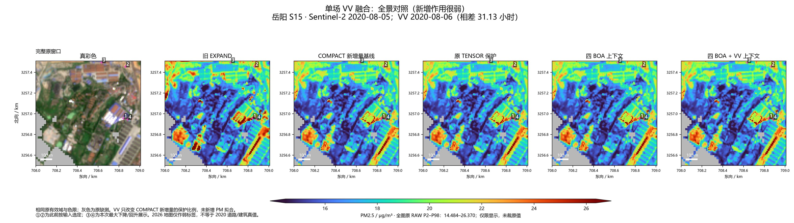
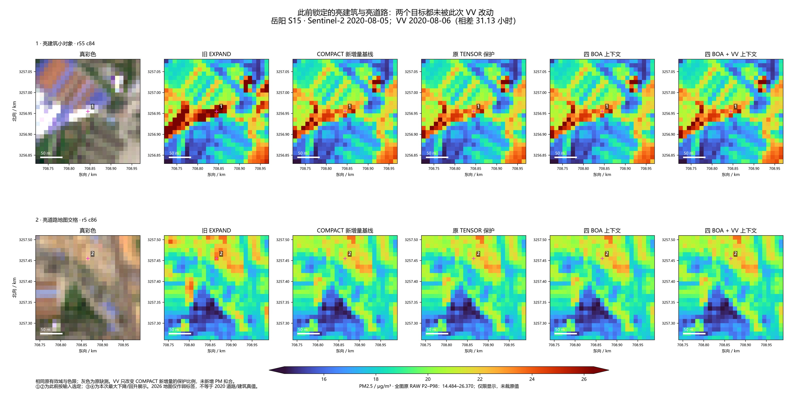
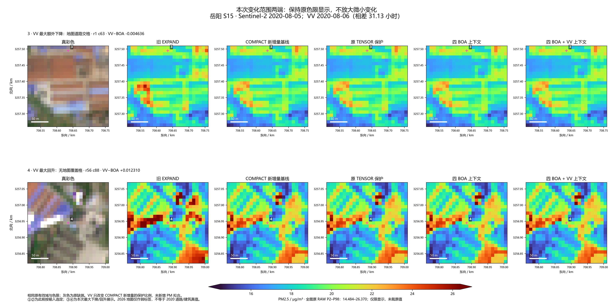

S2：2020-08-05；S1 VV：2020-08-06，相差31.13小时。使用该日真实B58，0新拟合，8个真实冻结头对照字段。
完整说明 · 分组实际变化 · 定位点数值 · 各基线窗口结果 · 固定公式 · 运行前方案
相同色限下，VV相对于BOA-only基本不可见。

两点本次变化均为0：不属于已有COMPACT新增量目标。

地图道路交格下降0.004636；无地图覆盖格回升0.012310 μg/m³。
